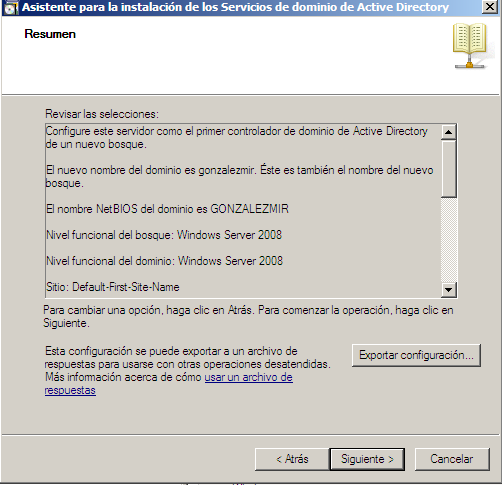
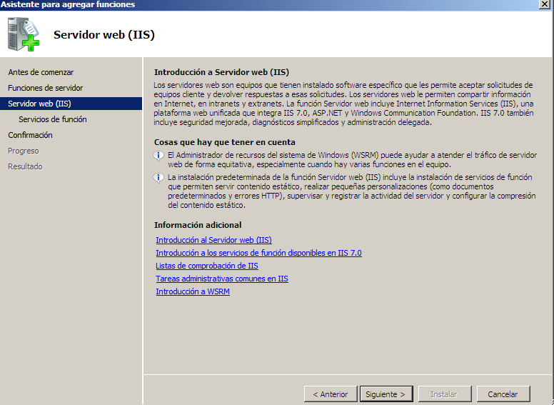
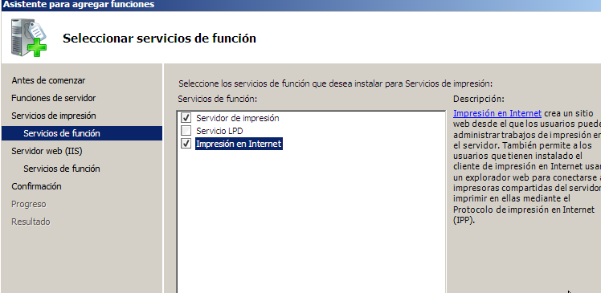
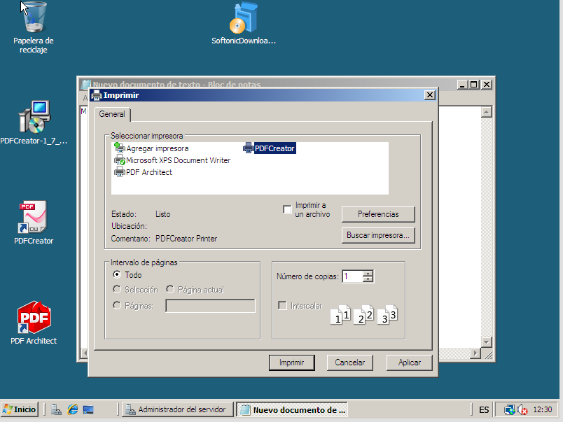
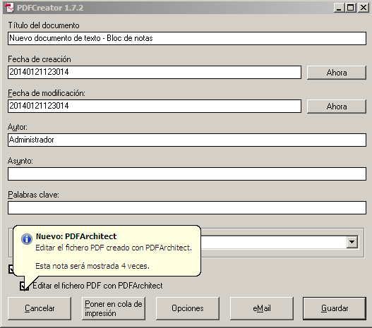
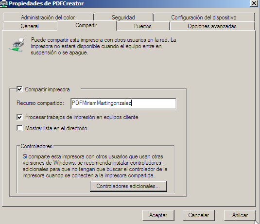
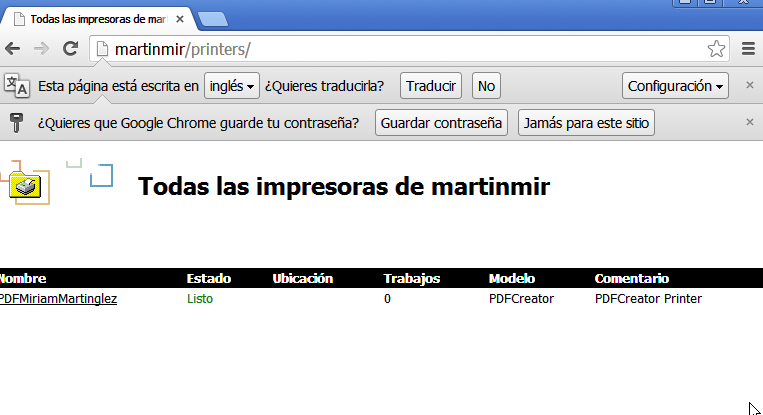
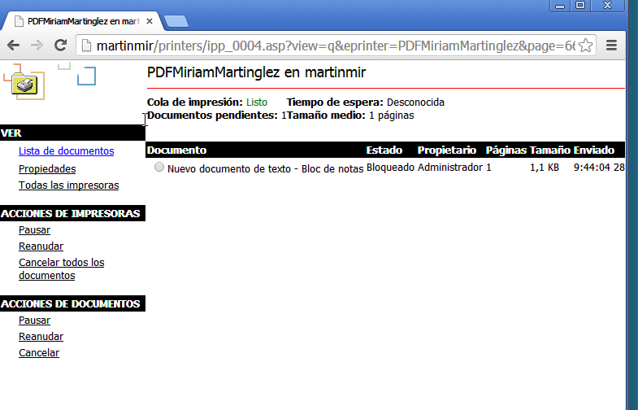

- Módulo: Sistemas Operativos
- Título del trabajo Instalación en Windows Server
- Componentes del grupo: Míriam Martín
- Curso Académico: 2013/2014
- Fecha de entrega: 29/01/2014
Lo primero que hice fue crear el dominio en mi caso como en clase hay personas con apellido Martín pues, puse Martinmir.
Lo siguiente fue instalar pdf creator, he instalar java, para hacer uso de este. Tambien instalé ISS, para posteriormente hacer uso de la función "impresión en Internet"
 Comenzamos haciendo un texto plano, para posteriormente "imprimirlo", con PDF Creator.
 Esta herramienta lo que hace es generarnos un PDF sobre el texto plano que escribí anteriormente.


A continuación creamos el recurso compartido, en este caso la impresora con nombre "PDFMiriamMartingonzalez".
Una vez creada nos aparecerá en nuestra red de impresoras. Ahora nos iremos al navegador,y escribiremos en la barrita de búsqueda, el nombre de nuestro dominio seguido de "/printers" Y nos mostrará la impresora que creamos.
En ella nos aparecerá el texto plano antes transformado a pdf.
No tuve ningún problema en las instalacion ni en las configuraciones del servidor.